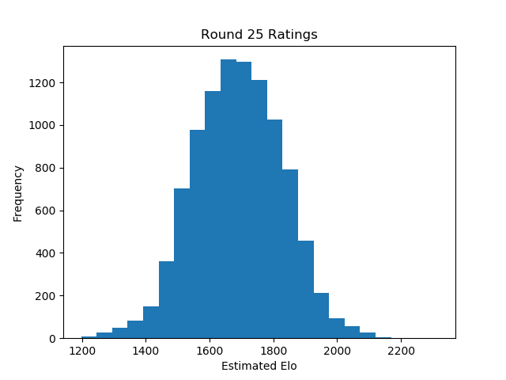

This is a python project that tests Elo matchmaking in a simulated environment. The motivation was simple: games like chess that use Elo matchmaking to estimate player skill can feel frustrating. Players will grind hundreds of games only to see little improvement in their score or ranking. Is the matchmaker to blame? Can Elo systems really misplace people badly, and are they vulnerable to 'Elo Hell' - persistant bands of similarly ranked players with widly disparate skills, making for random and frustrating matches - or are these complaints another example of Dunning–Kruger syndrome?
To test this, I went to FIDE, who helpfully have a public database of all professional player's Elo ratings. Although FIDE puts a hard floor on all rankings, using numpy we can create a randomized distribution that roughly mimics the actual score distribution. These will be our players' true scores.
Next, we can initialize our estimated rankings by setting all players to the same rank (here 1690, the median chess ranking). All that's left is to have players match against each other in an initial free-for-all.
import EloSim as e
# generate players with a randomized true-skill distribution
players = e.initplayers()
# Have players match against each other to estimate rank. Because all players are initialized with the same estimated Elo, we shouldn't match only with skill-brackets
playtournament(players, team_size=1, uncertainty=32, learning_rate=1.0, rounds=20, usebrackets=False)
And the player base is initialized! We can see the estimated skill distribution take shape fairly rapidly.


With a rough estimate of player skills, we can now start making educated matches, where players of similarly estimated skill can face each-other. We will bucket players into 23 skill brackets (as is common in most chess tournaments), allowing for some play outside the brackets. To measure our prediction accuracy, we will look at the overall skill spread, and at the number of matches it would take to move players from their estimated ranking to their true ranking.
# Play a 100 round tournament where players are roughly matched according to their skill level
playtournament(players, team_size=1, uncertainty=32, learning_rate=0.995, rounds=100, usebrackets=True)
Almost immediately, we see our distribution tighten to match the a Guassian approximation of the actual FIDE rankings.
We can also see that this is fairly accurate to the player's true scores, with a small (but persistent) margin of error across all skill levels.


GitHub
DataSet